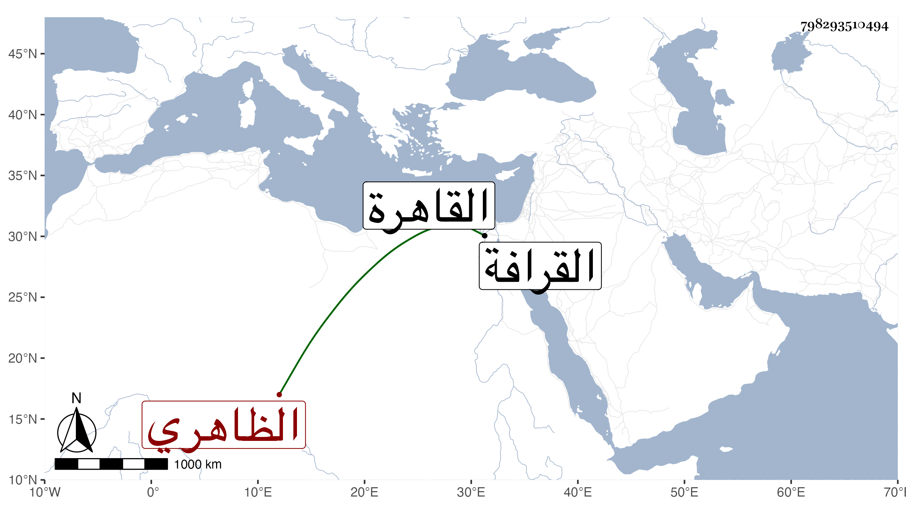

0902Sakhawi.DawLamic.ITO20230111-ara1.EIS1600.798293510494
Biography ID: 798293510494
137
تغرى بردي الظاهري القلاوي . كان من جملة المماليك الظاهرية الجقمقية أيام امرته فكان يرسله إلى اقطاعه قلا بالوجه القبلي كثيرا فلذا اشتهر بالنسبة اليها ولما تسلطن أستاذه ولاه كشف الخيرية ثم نقله لعدة ولايات آخرها الوزر في آخر دولته عوضا عن أمين الدين بن الهيصم فأقام فيه أشهرا ثم عزل بالأمين في الدولة المنصورية وأعيد لكشف اقليم البهنساوية بالوجه القبلي ، ووقعت له أمور مع الاشرف اينال وأخذ منه جملة مستكثرة ثم ولاه البهنسية ثانيا فلما خرج اليها ندم السلطان على ذلك وأرسل إليه سونجبغا رأس نوبة فتلقاه صاحب الترجمة بالقرب من قمن مع علمه بسبب مجيئه وأذعن بالطاعة وتقدم وسلم عليه فلما حاذاه قبض عليه سونجبغا وأعلمه ... بسبب مجيئه وأنه مأمور بوضعه في الحديد فقال الطائع لا يحتاج لهذا فقال له لشيء كان عنده منه قديما لا بد من هذا فنادى تغرى بردي رفقته فحطموا عليه وهم كثير بالنسبة لمن مع الآخر ووقع القتال فأصيب سونجبغا بسهم في رقبته فسقط عن فرسه إلى الأرض مغشيا عليه ثم أفاق وتكلم بكلمة واحدة ثم قضى فلما رأى ذلك رفقته برز بعضهم وضرب تغرى بردي بالسيف فطارت يده ثم مات واستمر القتال بين الفريقين إلى أن انهزم أعوان سونجبغا وأخذهم ولده وعاد بهم إلى القاهرة ، كل ذلك في جمادى الأولى سنة سبع وخمسين ووصلت رمة هذا إلى القاهرة فدفنت بالقرافة واستقر بعده في البهنساوية قراجا العمري .
